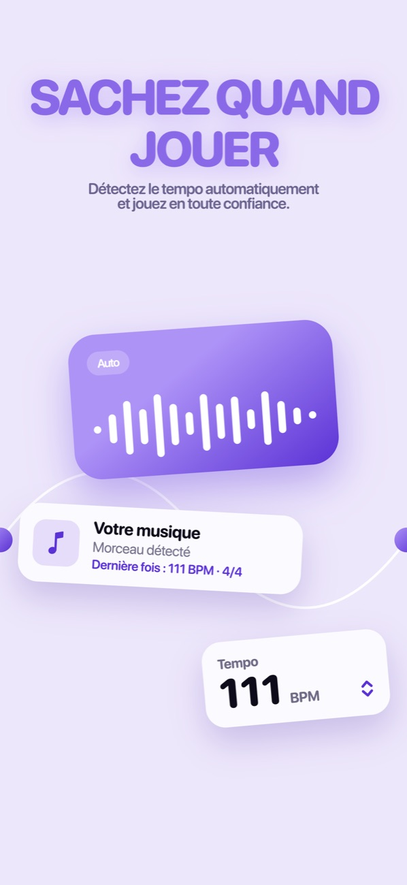
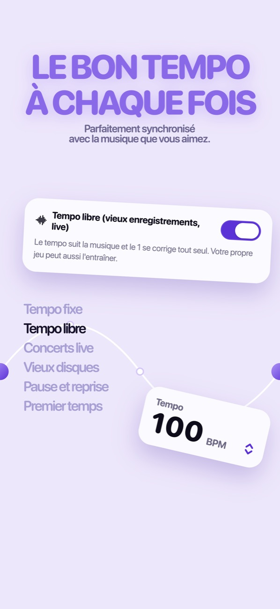
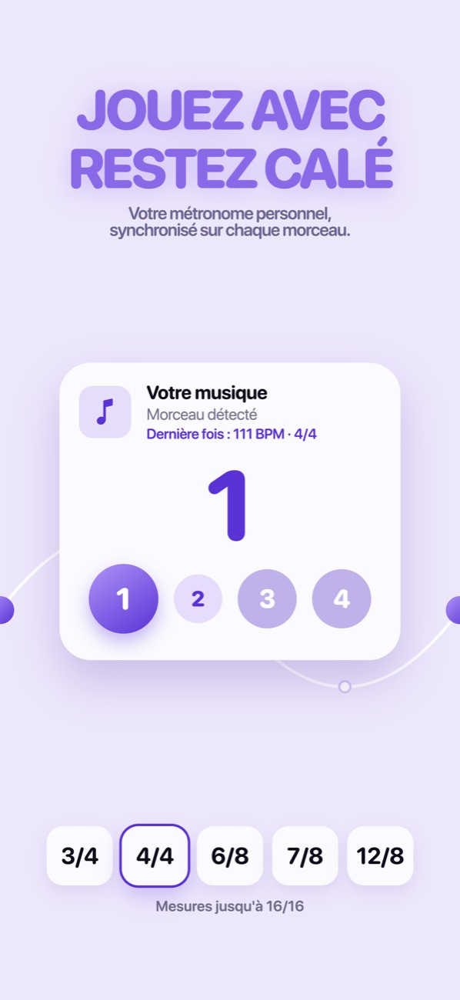
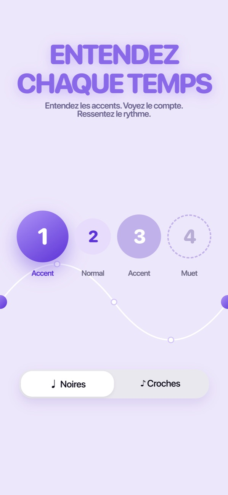

Comment ça marche
Lance la musique
Depuis une enceinte, un groupe ou une autre app.
Laisse-le écouter
Après 6 à 10 secondes environ, le tempo, la mesure et le premier temps sont détectés. Les titres déjà entendus sont reconnus en 5 secondes environ, même sans internet.
Joue avec
Le métronome bat la mesure, le premier temps plus aigu et plus fort. En croches si tu veux.
Reste sur la musique tant qu’elle joue.
Tempo fixe
Une fois calé, le tempo et le premier temps ne bougent plus. Jouer, chanter ou frapper des mains ne perturbe pas le métronome.
Tempo libre
Pour les enregistrements anciens ou live dont le tempo fluctue. Le métronome suit la musique.
Reconnaissance hors ligne
Les titres déjà entendus démarrent la fois suivante sur la bonne mesure, même si le tempo fluctue.
Pause et reprise
En pause, le métronome se tait mais suit la musique en silence. La reprise le ramène exactement en mesure.
Pensé pour le casque
Avance du clic contre le retard Bluetooth. Les clics peuvent sortir par le haut-parleur de l’iPhone.
Manuel
Un métronome classique de 30 à 300 BPM, des mesures jusqu’à 16/16 et le tap tempo. Fonctionne aussi sans micro.
Sache quand entrer.
Premier temps accentué, noires ou croches. Chaque temps peut être accentué, normal ou muet.




Pas de compte. Pas de pub. Pas de suivi.
Lire la politique de confidentialité- Micro
- Le son est analysé sur ton appareil. Aucun enregistrement n’est conservé ni envoyé.
- Reconnaissance des titres
- Une empreinte audio (pas d’audio) est envoyée à Shazam (Apple).
- Données de tempo
- Pour un titre reconnu, le titre et l’artiste sont envoyés à GetSongBPM.
Assistance AutoMetronom
Décris brièvement ta demande. Nous répondons au plus vite et n’utilisons tes informations que pour traiter ta demande.
Pour pouvoir t’aider : indique l’appareil, la version d’iOS, la version de l’app, le titre joué et une brève description. Une capture d’écran aide souvent.
Textes légaux
Choisis la région où tu utilises AutoMetronom.
- SuissePolitique de confidentialitéConditions d’utilisationCopyright
- Union européenne et EEEPolitique de confidentialitéConditions d’utilisationCopyright
- États-UnisPolitique de confidentialitéConditions d’utilisationCopyright
- Chine continentalePolitique de confidentialitéConditions d’utilisationCopyright
- Autres régionsPolitique de confidentialitéConditions d’utilisationCopyright